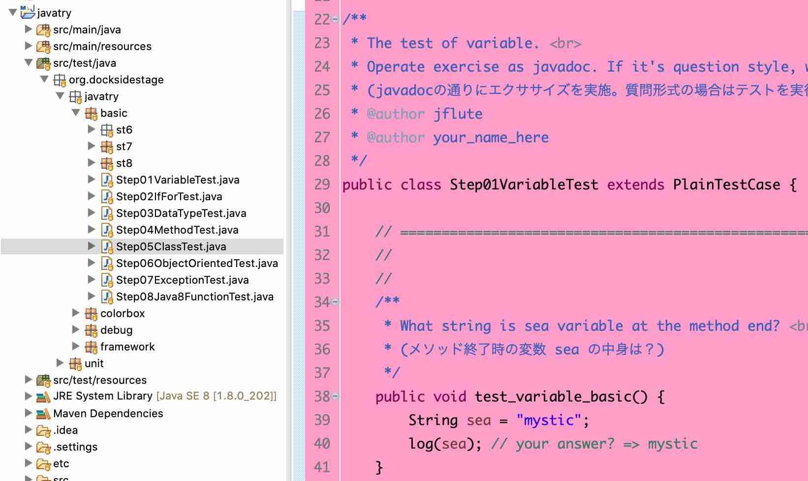

javatry (じゃゔぁとらい)
${indexlist}概要
Javaの "わりと初心者" の方からできるエクササイズです。(DBFluteは登場しませんが、プログラミングの基礎スキルがあってこそフレームワークが使いこなせるものです)
こんな方にオススメ
- Javaの本は少し読んでみた程度のプログラミング初心者
- 他のプログラミング言語は少しやってるけど、Javaは知らない
- Java何年も書いてるけど、クラス設計や例外ハンドリングなど不安
と、一応は書いてみましたが...
Javaの経験に関係なくプログラミングの基礎的なエッセンスを学びたい方にオススメです。
ハンズオンで学ぶ
実際に、Javaを書いて動かせる環境を作って学んでいくハンズオンです。
図 : javatryの環境 
{kind=link}
クイズ形式のエクササイズ
まずは、クイズ形式のエクササイズで準備運動しましょう。
e.g. クイズ形式のエクササイズ @Java
/**
* What string is sea variable at the method end? <br>
* (メソッド終了時の変数 sea の中身は？)
*/
public void test_variable_reassigned_basic() {
String sea = "mystic";
String land = "oneman";
sea = land;
land = land + "'s dreams";
log(sea); // your answer? =>
}
コーディング形式のエクササイズ
そして、コーディング形式のエクササイズでコードも書いていきましょう。
e.g. コーディング形式のエクササイズ @Java
/**
* What is color name length of first color-box? <br>
* (最初のカラーボックスの色の名前の文字数は？)
*/
public void test_length_basic() {
}
↓↓↓
public void test_length_basic() {
List<ColorBox> colorBoxList = new YourPrivateRoom().getColorBoxList();
String answer = colorBoxList.stream()
.findFirst()
.map(colorBox -> colorBox.getColor().getColorName())
.map(colorName -> colorName.length() + " (" + colorName + ")")
.orElse("*not found");
log(answer);
}
javatryの環境構築
1. javatryリポジトリをgit clone
xxx
2. Eclipse/IntelliJなどでimport
xxx
3. テストメソッドの実行で動作確認
xxx
好みもあるけどオススメの設定
xxx
- Package Presentation の調整 (Eclipseの場合)
- Eclipse のデフォルトは、Package Presentation が Flat で、パッケージがたくさんあるプロジェクトだと、ずらーっと並んで見づらいと感じることがあります。 特にjavatryはパッケージ階層が多いので Hierarchical の方が扱いやすいかもしません。
- Hierarchical に変更する場合は、(Java パースペクティブの)パッケージエクスプローラの右上の下矢印っぽいマークの部分 (View Menu) から、Package Presentation の Hierarchical を選択します。
javatryの進め方
Step01から進めていく
src/test/java 配下の org.docksidestage.javatry パッケージに、エクササイズのクラスが用意されています。 まずは、Step01VariableTest.javaをエディターで開きましょう。
e.g. classes for javatry exercise @Directory
src/test/java
|-org.docksidestage
| |-javatry // xxx
| | |-basic // xxx
| | | |-Step01VariableTest.java // xxx
| | | |-Step02IfForTest.java // xxx
| | |-colorbox // xxx
| | |-debug // xxx
| | |-framework // xxx
| |-unit // xxx
|
|-...
クラスのJavaDocを読んで、ぜひauthorを
xxx
メソッドのJavaDocを読んで、ここエクササイズ！
xxx